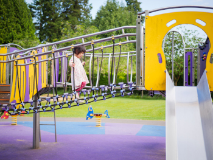

Brinquedos e Playgrounds
Playground
Buffet Infantil
Escolas
Condomínios e Shoppings
Arvorismo
Economia
A vistoria técnica para brinquedos e playgrounds serve para garantir a segurança dos usuários, evitando dessa forma processos judiciais e interdições. A conformidade com as normas vigentes assegura o cumprimento das exigências legais, evitando multas e outras sanções. Além disso, a avaliação técnica identifica necessidades de manutenção preventiva, evitando custos com reparos emergenciais e substituições desnecessárias. A inspeção periódica é obrigatória em São Paulo para playgrounds de uso coletivo, especialmente os de grande porte, devendo ser realizada por profissionais habilitados conforme as normas da ABNT e a legislação vigente. A periodicidade pode variar, sendo essencial verificar a legislação específica para cada tipo de estabelecimento e brinquedo.
Saúde
A inspeção técnica verifica a integridade estrutural dos brinquedos e equipamentos de playgrounds, conforme os critérios estabelecidos pelas normas técnicas e as leis vigentes. A conformidade com essas normas reduz riscos de lesões e incidentes, principalmente nas crianças, que são mais vulneráveis e suscetíveis a esse tipo de ocorrência, promovendo um ambiente adequado para utilização.
Responsabilidade
- Decreto Nº 52.587, de 23 de agosto de 2011: Dispõe sobre a necessidade de apresentação de Laudo Técnico dos equipamentos de diversão instalados por "buffets" infantis, parques de diversões e similares, para fins de expedição do Auto de Licença de Funcionamento, do Alvará de Funcionamento e suas revalidações e do Alvará de Autorização e sua prorrogação.
- LEI Nº 14.517, de 31 de agosto de 2011: Dispõe sobre a afixação de placas informativas em brinquedos e demais atrações existentes em parques de diversões, no Estado de São Paulo, e dá outras providências.
- DECRETO Nº 60.086, de 22 de janeiro de 2014: Dispõe sobre a afixação de placas informativas em brinquedos e demais atrações existentes em parques de diversões, no Estado de São Paulo, e dá outras providências.
- Lei Municipal Nº 16.870, de fevereiro 2018: Estabelece normas de segurança e manutenção para brinquedos de parques infantis.
Normas Técnicas
- ABNT NBR 16071: Playgrounds é o conjunto de normas técnicas brasileiras que estabelece os requisitos de segurança, terminologia, métodos de ensaio, projeto, instalação, inspeção, manutenção e utilização de playgrounds.
- ABNT NBR 15859: Brinquedos infláveis de grande porte: Especifica os requisitos de segurança para brinquedos infláveis de uso coletivo.
- ABNT NBR 15508: É o conjunto de regras que garante a segurança em parques de arvorismo. Ela define como as estruturas (pontes, tirolesas) devem ser construídas e mantidas.
- ABNT NBR 17096: Segurança de Brinquedos – Brinquedo para uso coletivo intenso – Requisitos e métodos de ensaio: Esta norma é mais recente e foca em brinquedos de uso coletivo intenso em instituições como escolas e creches.
O Engenheiro Mecânico é o profissional habilitado para elabora o laudo e registra a Anotação de Responsabilidade Técnica (A.R.T.) junto ao órgão competente. A conformidade técnica auxilia no atendimento às exigências de seguros e responsabilidade civil.